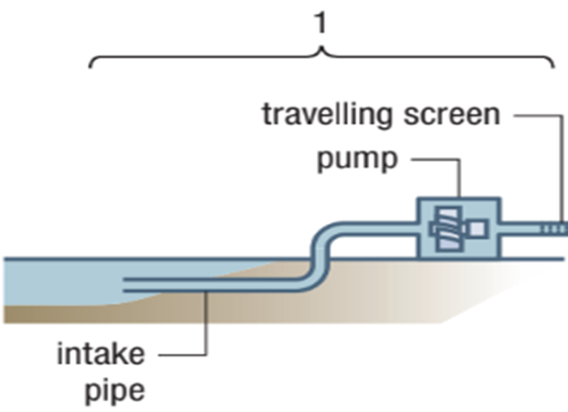
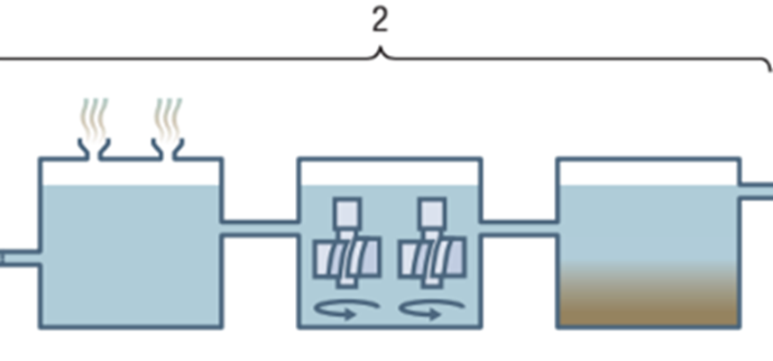
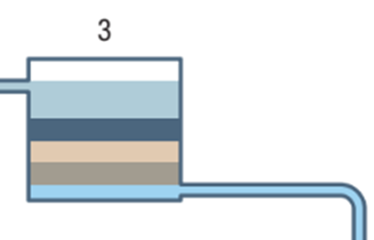
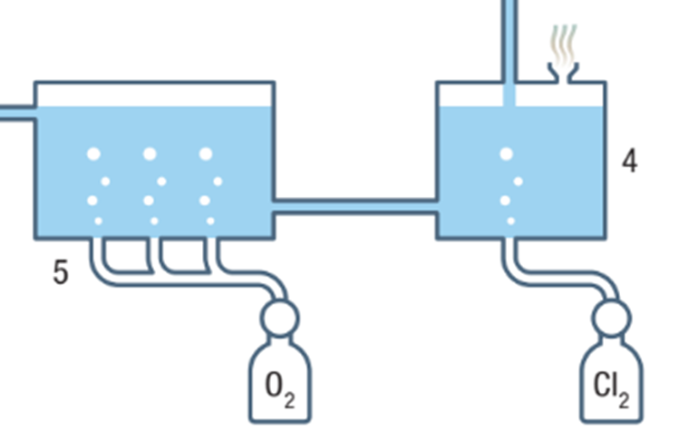
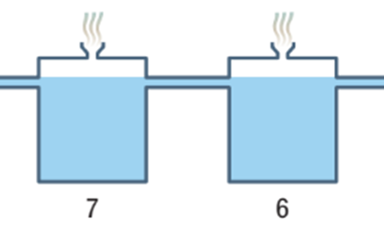
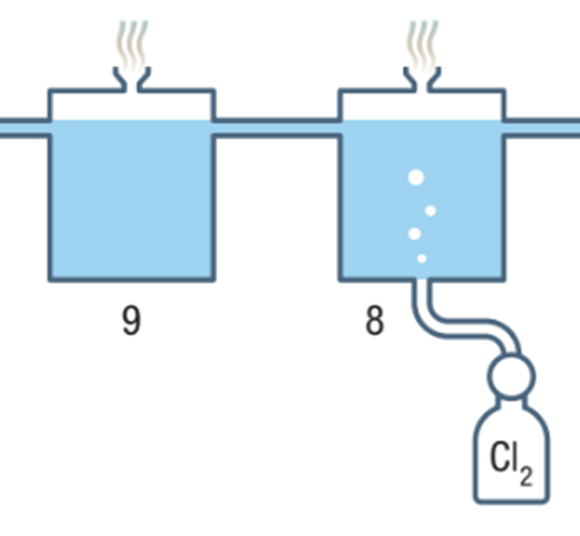

|
Most places in Canada have safe, high-quality tap water. But not all tap water is created equal. That is why the tap water may taste or feel different from region to region. The composition of tap water depends on where the water comes from (such as a lake or aquifer) and what it dissolved on the way to your tap. It also depends on how the water is treated. |
The key steps involved in taking water from its source and transforming it into the potable product that comes out of a tap in the city are mentioned below.
Accordion
Traveling screens remove debris and other large particles as the water enters the treatment plant.

Chemicals known as coagulants mix with the water, causing the small particles in the water to clump together.
Flocculation, which involves gentle mixing, forms a light, fluffy precipitate called a floc. During sedimentation, the floc sinks very slowly, taking suspended particles to the bottom of the tank and clearing the water.

The water flows by gravity through efficient filters made up of layers of sand and anthracite (carbon). This removes the remaining floc, other chemical and physical impurities, and most of the biological impurities (bacteria, etc.).

A disinfectant such as chlorine kills microorganisms. Alternative disinfectants include ozone or chlorine dioxide, ammonia, potassium permanganate, and even ultraviolet light.
Air, ozone, oxygen, “activated” charcoal, ammonia, chlorine dioxide, or potassium permanganate may be mixed with the water to further reduce taste and color problems.

Sodium carbonate and calcium hydroxide or phosphate may be added to reduce water hardness by precipitating the calcium and magnesium ions in the water.
Some municipalities add a small quantity of fluoride to drinking water because it makes the enamel layer of teeth more resistant to decay.

A final chlorine disinfection treatment kills any remaining micro-organisms. The pH level in the water is adjusted to be slightly basic because even slightly acidic water will corrode metallic pipes.
Ammonia stabilizes the chlorine so that it remains dissolved in the treated water for longer periods.
